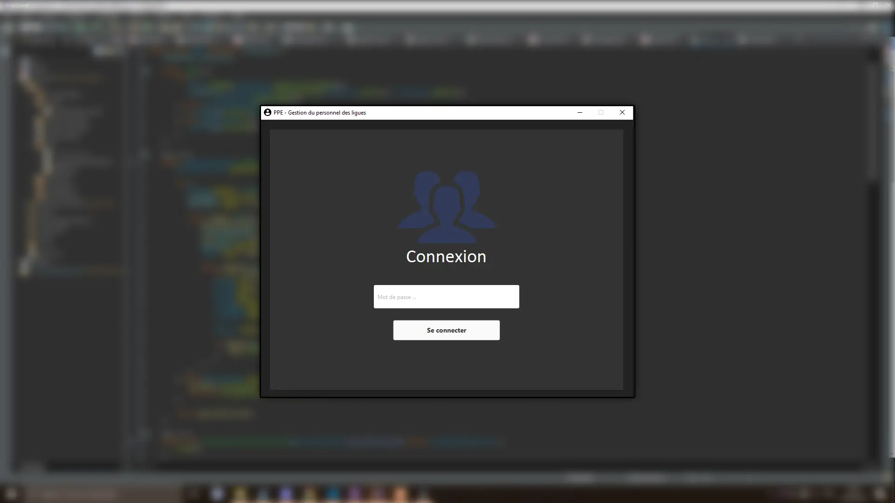
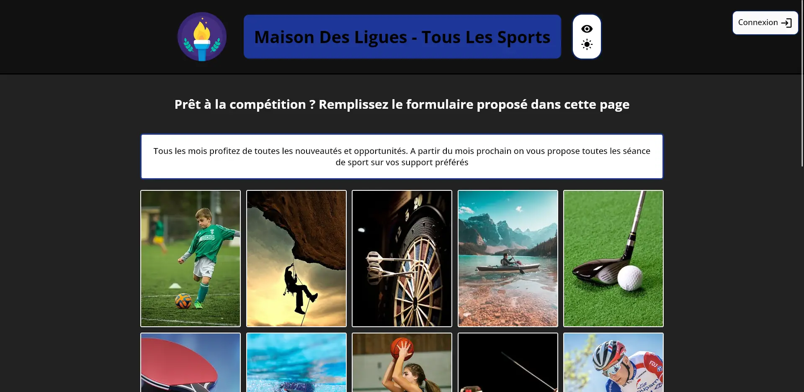
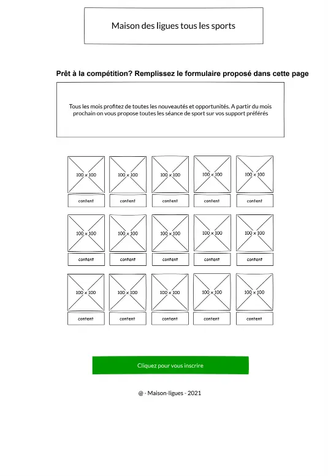
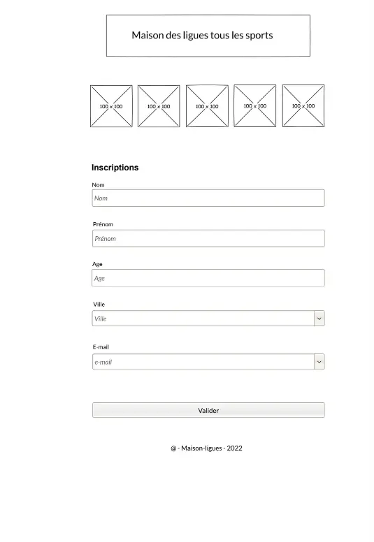
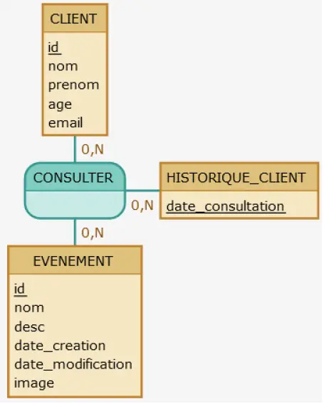

AP_JAVA
Sujet
Un des responsables de la M2L, utilise une application pour gérer les employés des ligues. L’application est mise à votre disposition par le biais des ressources suivantes :
Cette application, très simple, n’existe qu’en ligne de commande et est mono-utilisateur. Nous souhaiterions désigner un administrateur par ligue et lui confier la tâche de recenser les employés de sa ligue. Une partie du travail est déjà faite mais vous allez devoir le compléter.
Les niveaux d’habilitation des utilisateurs sont les suivants :
- Un simple employé de ligue peut ouvrir l’application et s’en servir comme un annuaire, mais il ne dispose d’aucun droit d’écriture.
- Un employé par ligue est admininstrateur et dispose de droits d’écriture peut gérer la liste des emloyés de sa propre ligue avec une application bureau.
- Le super-admininstrateur a accès en écriture à tous les employés des ligues. Il peut aussi gérer les comptes des administrateurs des ligues avec une application accessible en ligne de commande.
- L’application doit être rendue multi-utilisateurs grace à l’utilisation d’une base de données.
- Les trois niveaux d’habilitation ci-dessus doivent être mis en place.
Itération 1
- Modélisation d’une base de données avec un MCD.

- Vérification du fonctionnement correct de l’application grâce à des tests unitaires.
- Gestion de la date de départ et de celle d’arrivée de chaque employé (couche métier + tests unitaires).
- Représentation des menus du dialogue en ligne de commande avec un arbre heuristique (Utilisez un logiciel de type Freemind).

Itération 2
- Création de la base de données.
- Gestion des dates dans le dialogue en ligne de commande.
- Dans le dialogue en ligne de commande, un employé doit être selectionné avant que l’on puisse choisir de modifier ou de supprimer.
- Possibilité de changer l’administrateur d’une ligue en ligne de commande.
Itération 3
- Création d’une classe fille de Passerelle permettant de gérer la connexion à la base de données avec JDBC (ou avec Hibernate si vous le souhaitez).
- Modélisation de l’interface graphique avec des maquettes.
- Possibilité de changer l’administrateur d’une ligue en ligne de commande.
Itération 4
- Création d’une interface graphique avec JavaFx pour que les administrateurs puissent gérer les ligues.
- Si une ligue n’a pas d’administrateur, c’est automatiquement le root qui devient l’administrateur de la ligue (avec les tests unitaires correspondants).
- Installation de la base de données sur un serveur accessible dans le réseau local de la société.
- Rédaction d’un mode opératoire à l’usage des administrateurs.
AP_WEB
Sujet
Une agence nous confie la réalisation d’une page publicitaire pour la Maison de ligues sur le web. La promotion a pour but de conquérir des nouveaux abonné(e)s, en proposant la diffusion de toutes les compétitions sportives. Pour cela nous conseille d’abord d’analyser toutes les fonctionnalités au travers des deux wireframes. Les spécifications pour le fonctionnement de chaque partie ne sont pas définies. La charte graphique doit être crée par vous.
Pour commencer vous devez tout simplement mettre en place une structure html sémantique car le contenu de cette publication est destiné à tout public. Penser à produire un code optimisé pour les moteurs de recherche à l’indexation de l’information.
Maquette
- 
- 
réalisation
Réaliser une interface d’admin gestion client
Cette partie du site a pour but de permettre aux administrateurs des Maisons des ligues, de recenser leurs clients. Pour ce faire, il faut créer une interface admin qui permet d’ajouter un client, modifier sont profile ou le supprimer.
Aspect fonctionnel
Vous devez créer toute la partie gestion. Pour les enregistrements à publier il faut créer une page avec un formulaire de 4 champs : Nom, Prénom, Age et adresse électronique. Tous les champs sont obligatoires. Afficher un warning dans le cas l’administrateur ne renseigne pas un champ.
Base de données
Aspect technique
Les technologies autorisées sont : html5 css3, js et php orienté objet Police de caractères : ‘Open Sans’, sans-serif Iconographies obligatoires de votre choix La couleur des thèmes doivent être indexée dans des variables css Le code HTML généré doit être valide selon les normes du W3C et tester également, pour les spécificités de la WAI et du WCAG (accessibilité) Votre rendu sera publié sur un dépôt Github. Celui ci doit avoir une structure logique, contenir un readme.md avec présentation du projet et un fichier « .gitignore » si besoin.
PHP
Connexion à la base de données
PHP